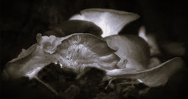

Previsioni del tempo 24h: Sole
assente Vento:
11km/h SSE; Temp: 20°C; Hum: 90%
Doskvol Times
Doskvol, Akoros - 31th Kalivet, 848
PROCESSO IN CRISI
Scomparsa testimone chiave
È sparito un testimone chiave del processo "Leviatani". Miss Prichard, questo il nome del testimone,
dovrà presenziare all'udienza fra pochi giorni; ma le nostre fonti ci dicono che se ne sono perse le tracce.
Abbiamo intervistato le due parti per saperne di più.
Grethel Menace, rappresentante legale dei Cacciatori di Laviatani smentisce le voci e ci
assicura che si tratti di un semplice malinteso che verrà velocemente risolto.
Il processo Leviatani procede senza intoppi. Noi non confidiamo su alcun 'testimone chiave'.
Lo studio legale ha però richiesto un rinvio di qualche giorno per fare accertamenti sulla vicenda.
Tabitha Danfield, la consulente legale del Ministero, non è dello stesso avviso.
Si tratta di un tentativo di manipolazione dell'opinione pubblica. Rifiutiamo ogni tentativo di rinvio.
Sul coinvolgimento del Ministero nella scomparsa di Miss Prichard, Miss Danfield si è astenuta dal commentare.
di Lyra Valtor
TAFFERUGLIO A CHARTER HALL
Stavolta c'è scappato il morto
Un inseguimento in piena regola tra i canali di Duskvol nel quartiere Charter Hall.
Un gruppo di Giubbe Grigie inseguiva una chiatta adibita alla manutenzione dei canali.
Un nostro contatto nei Gondolieri ci ha assicurato che non ci sono stati movimenti tra le loro fila,
ma che sanno di una nuovo gruppo comparso di recente nei canali cittadini che si fa chiamare "Sciacalli".
C'è maretta anche tra i Cacciatori di Leviatani e le Giubbe Grigie che pare abbiano avuto un alterco in un Motel in quella zona
dove c'è addirittura scappato il morto, un membro delle Giubbe.
Forse gli Sciacalli hanno avuto un ruolo in questa faccenda?
Mr. Markellus Rowan, proprietario dello stabile, si è rifiutato di parlare col nostro corrispondente, ma il suo staff ci assicura
che era molto seccato dalla faccenda, specialmente per lo stato in cui sono state trovate alcune stanze dell'edificio.
La nave nel cielo
Di Lyra Valtor
Una nave nei cieli di Duskvol è senza dubbio uno spettacolo che mozza il fiato.
Nella giornata di ieri tutti i cittadini hanno avuto un motivo per guardare in alto.
La gigantesca nave volante Imperiale Covenant ha solcato i cieli di Doskvol per qualche ora nella giornata di ieri.
Pare che trasportasse il famigerato "Blackcoat", Mr. Major Rowan, di ritorno dalla sua visita alla città Imperiale.
Major Rowan -- foto di repertorio
Nelle prossime settimane si terrà un matrimonio in una delle più prestigiose tenute Rowan; i lettori interessati continuino a seguirci
per altri succulenti dettagli e reportage.
Una nuova sostanza?
Si parla di un misterioso fungo
Alcuni dei nostri contatti dei bassifondi ci parla di una nuova sostanza psicoattiva che sta prendendo piede
negli ultimi giorni.
Pare che l'origine siano delle strane formazioni fungose rinvenute in alcune zone della città
che non ci sono state rivelate.

Strange mushrooms
Pare che l'assunzione di questo fungo porti a stordimento e perdita della memoria a breve termine, ma già molte bande
stanno lavorando per aggiungere una componente di sballo alla potente sostanza.